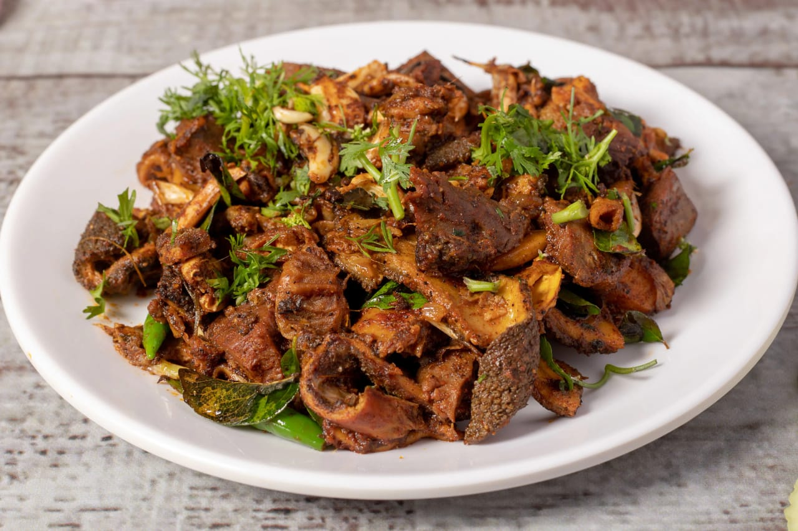

Khasi ko bhutan:

About the recipe
Khasi ko Bhutan is a popular Nepali dish made from goat's internal organs, such as liver, stomach, and intestines. It's a delicacy often enjoyed during festivals like Dashain and Tihar.t's typically served with beaten rice (chiura) and garnished with onions and chilies
Ingredients:
- 500gms of internal organs (mostly stomach)
- 4 tablespoons of oil
- Salt to taste
- A teaspoon of turmeric powder
- 2 teaspoons of cumin and coriander powder
- Chili powder to taste
- A teaspoon of garam masala
- A teaspoon of garlic ginger paste
Preparation
Clean the intestines(big and small) with clean running water just like water runs through the pipe until the organ is transparent.
Clean the stomach clean, so no remains of food are seen.
Boil the organs for 10 minutes in a low flame. This is to soften the stomach’s internal layer(honeycomb patterns), so those can be scraped off.
Scrape the internal layers of the stomach using a knife. If not scrapped, you smell the stomach while eating.
After cleaning, chop the organs into pieces. These pieces when fried shrinks, so make sure pieces are not too small.
Make sure you drain the water and have a minimum or no water remaining. When water comes in contact with heated oil, oil sputters. This might cause injury on your face or skin while cooking.
Steps:
- Heat oil in a pan. We are using an iron pan, so oil heats quicker. Heat the oil in a medium flame.
- Pour the chopped pieces into the pan. Add salt, and turmeric powder, then cover the lid. This is for safety, so the oil does not sputter.
- Start frying. As the water evaporates, the sputtering sound is less heard.
- When the sputtering is less, open the lid and keep stirring.
- After 10 minutes, add ginger-garlic paste and keep stirring. You don’t have to cover with the lid.
- Fry on a medium flame for 20-25 minutes while stirring every 5 minutes.
- 5-7 minutes before switching off the gas, add chili powder, cumin, and coriander powder along with garam masala powder.
- This is to avoid burning of the ingredients and keep the taste intact.
- To make it extra crispy, fry it for 5 minutes more.
- Drain the excess oil.